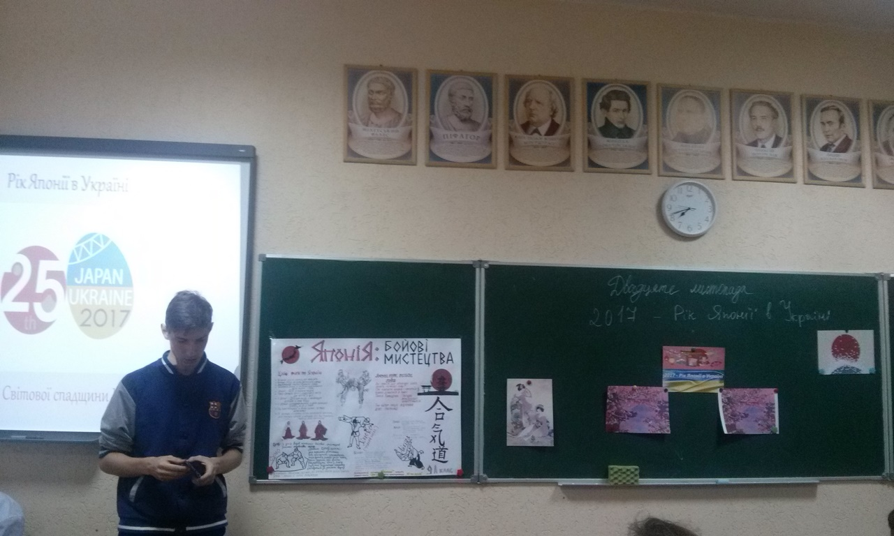

"Японія країна сходу"
Протягом вересня – листопада в закладі освіти відбулися заходи, присвячені року Японії в Україні. Учні під час них знайомилися з історією Японії, її культурою, що вирізняється вічним прагненням до краси. Кімоно і сакура стали вічними символами цієї країни. Згадували про трагедію Хіросіми та Нагасакі. Також розглядали звичаї та традиції цієї країни. Наприклад, про чайну церемонію, сенс якої не в дегустації напою, а в спробі віднайти гармонію не лише в собі, а й з іншими людьми. Такі заходи виявились для учнів дуже цікавими та захоплюючими.
